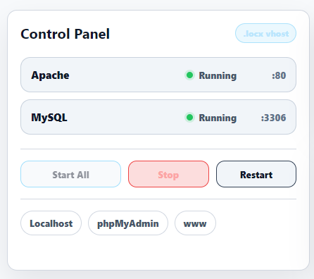
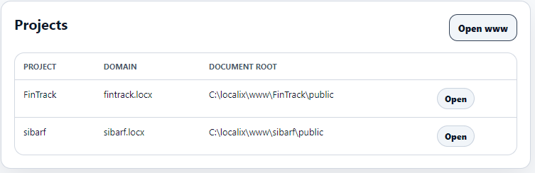
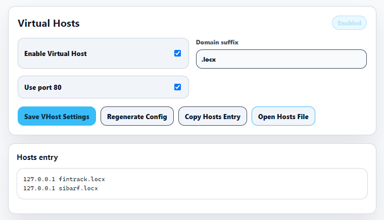
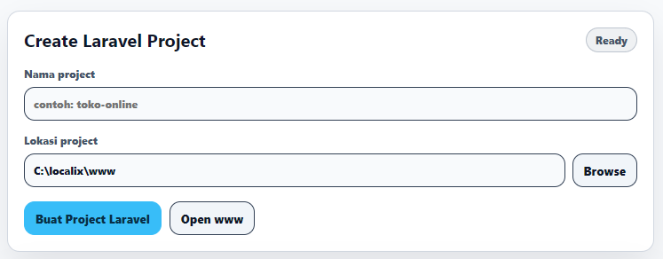

Fitur
Semua yang dibutuhkan pengembang PHP untuk menjalankan proyek secara lokal di Windows. Dibundel, dikonfigurasi, dan siap digunakan.
Satu dasbor untuk mengendalikan semuanya. Jalankan, hentikan, dan nyalakan ulang Apache dan MySQL bersama-sama atau secara terpisah. Tanpa perintah terminal, tanpa file konfigurasi. Hanya tombol yang berfungsi.

Cukup letakkan folder proyek Anda di dalam direktori www. Localix secara otomatis mendeteksi dan menampilkannya di dasbor Anda. Klik untuk membuka proyek Anda secara instan.

Lupakan mengedit file host Windows secara manual dan file konfigurasi Apache. Masukkan nama domain lokal yang Anda inginkan (misal: proyekku.locx) dan Localix akan menangani konfigurasi server dan DNS-nya.
.locx lokal
Mulai proyek Laravel baru dengan mudah. Pembantu internal kami akan mengunduh dan memasang versi terbaru Laravel melalui Composer terintegrasi, menyiapkan database, dan membuat virtual host untuk Anda dalam satu alur terpadu.
.env dan kunci aplikasi
Semua Fitur
Apache, PHP 8.4, MySQL 8.x, phpMyAdmin, dan Composer semua sudah termasuk. Tidak perlu mengunduh terpisah.
Halaman landing bersih di localhost menampilkan status server, port, link phpMyAdmin, dan proyek aktif.
Lihat log error dan akses Apache langsung dari dalam aplikasi tanpa perlu membuka folder log secara manual.
Perbaiki konfigurasi phpMyAdmin, periksa kesehatan layanan, dan jalankan tugas pemeliharaan umum dari satu layar.
Atur port Apache, port MySQL, perilaku auto-start, suffix domain, dan tema aplikasi dari antarmuka grafis.
Selain installer, tersedia build portabel .exe. Jalankan Localix dari folder mana saja tanpa instalasi.